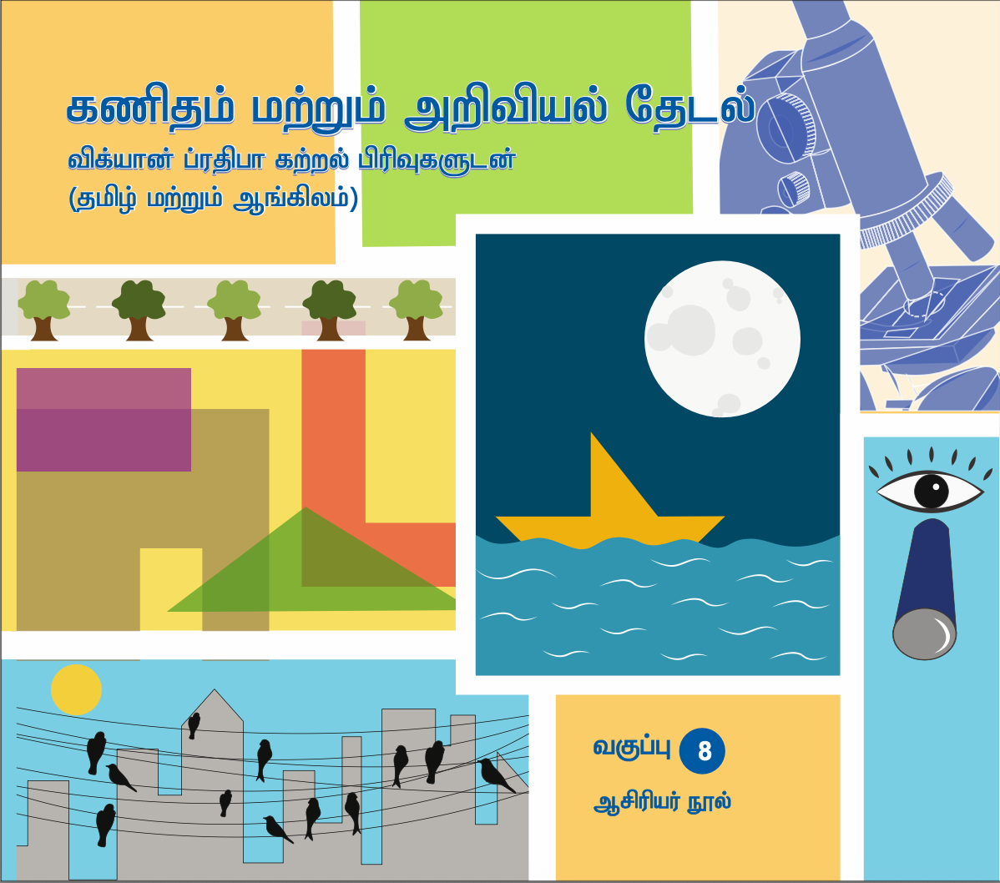
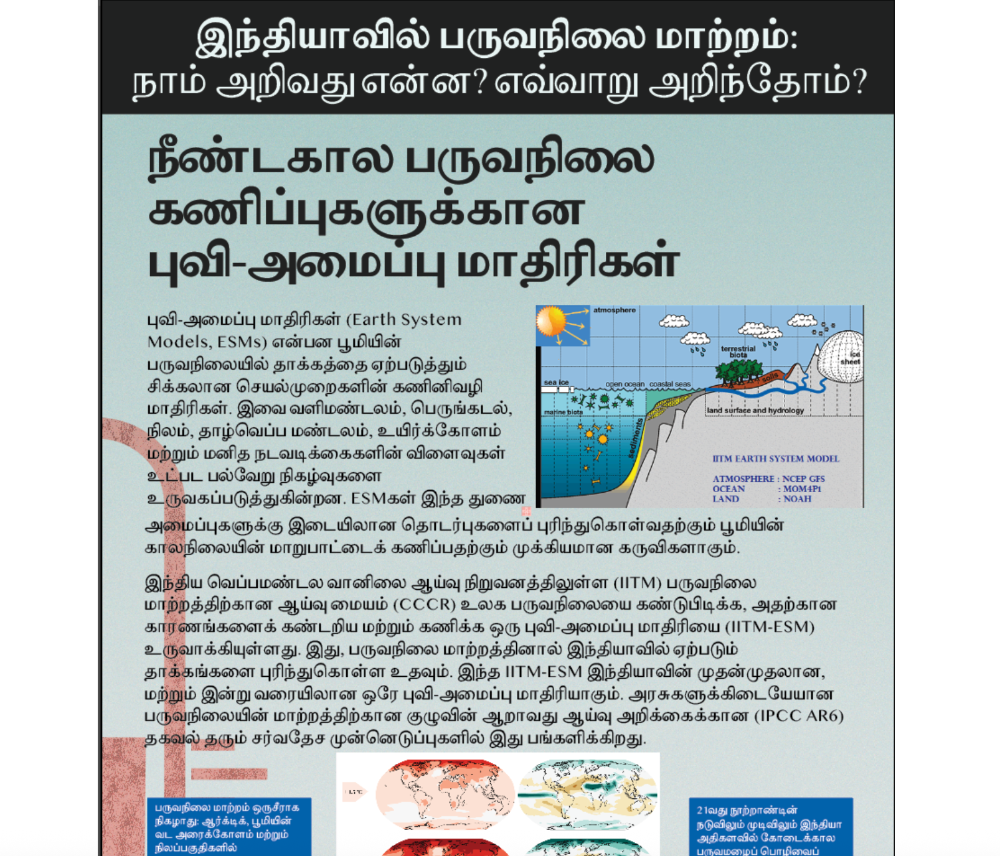
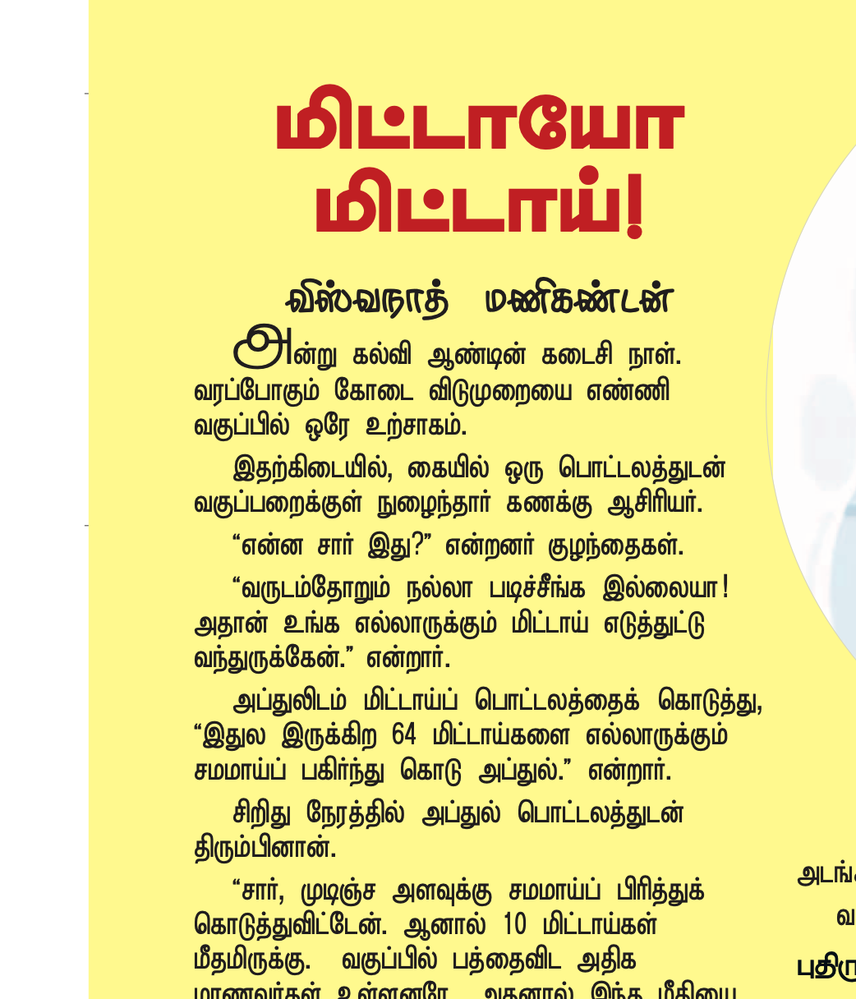

Translations
Math and Science

Vigyan Pratibha Class 8 Teacher's Book
Learning Materials for class 8 science and math teachers. Accessing these materials requires a login to the website. You can get the individual learning units, not the entire book.
ISBN: 978-81-974480-8-9

Vigyan Pratibha Class 8 Student's Book
Learning Materials for class 8 science and math students. You can get the individual learning units, not the entire book.
ISBN: 978-81-963057-4-1

Small Science Class 1/2 Teacher's Book
Teacher's book for class 1/2, a part of the Small Science curicullum developed by HBCSE.
ISBN: 978-81-97440-9-6

Climate Change in India: What do we know and how?
Poster series created by Varuni and Shankar for Science at the Sabha 2024. Co-translated with Uthra Dorairajan.

இந்திய சூழ்நிலையில் புவி வெப்பமடைதல்: ஓர் அறிமுக கண்ணோட்டம்
Written by Nagraj Adve. Translated this book with Charu Ravichandran.

Thulir Articles
Thulir is a tamil science and math magazine for school children. Worked with Prof. Viswanath on these articles during 2022-2023.
வெறும் கண்ணில் கோள்களை பார்ப்போம்!
Translation of an article by Alok Mandavgane. Published in Thulir magazine.
Non-Fiction
(நேர்காணல்) "என்னுடைய படங்களில் வரும் கதாபாத்திரங்களுடன் நானும் மாறியுள்ளேன்"
Translated this interview of one of my favourite film directors in 2023.
(கட்டுரை) "பைத்தியநிலை குறித்து"
Translated this essay by Arthur Schopenhaeur in 2024. Quite an interesting piece especially about history of influence of eastern thought on the western thinkers and research in mental illness.
(சொற்பொழிவு) "புதிய வாழ்க்கை தத்துவம்"
(2025) Translation of a speech by Meghnad Saha, the scientist who revolutionized astrophysics and was elected to the parliament.